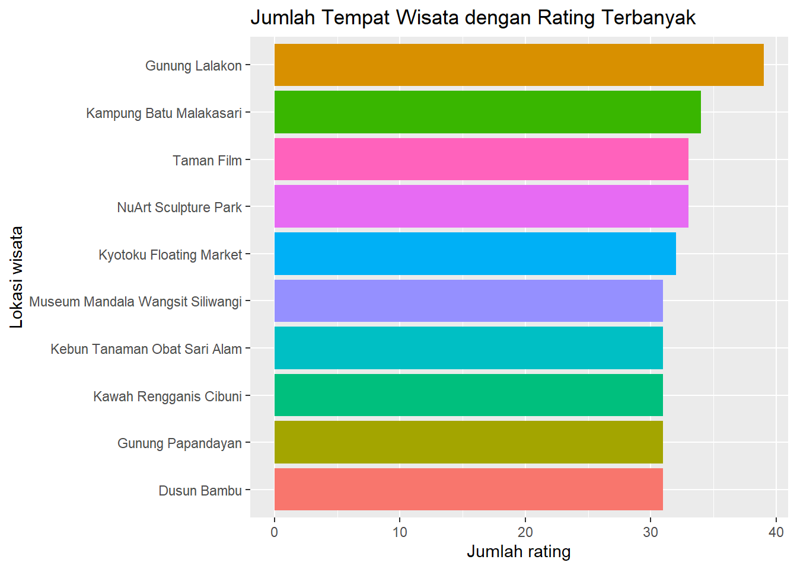
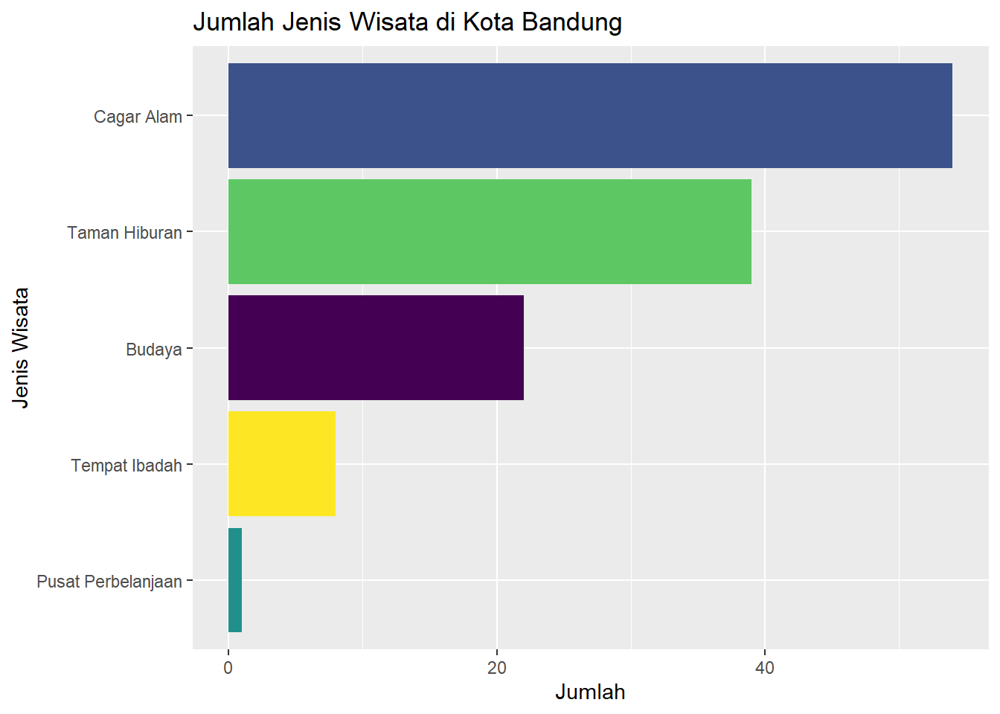
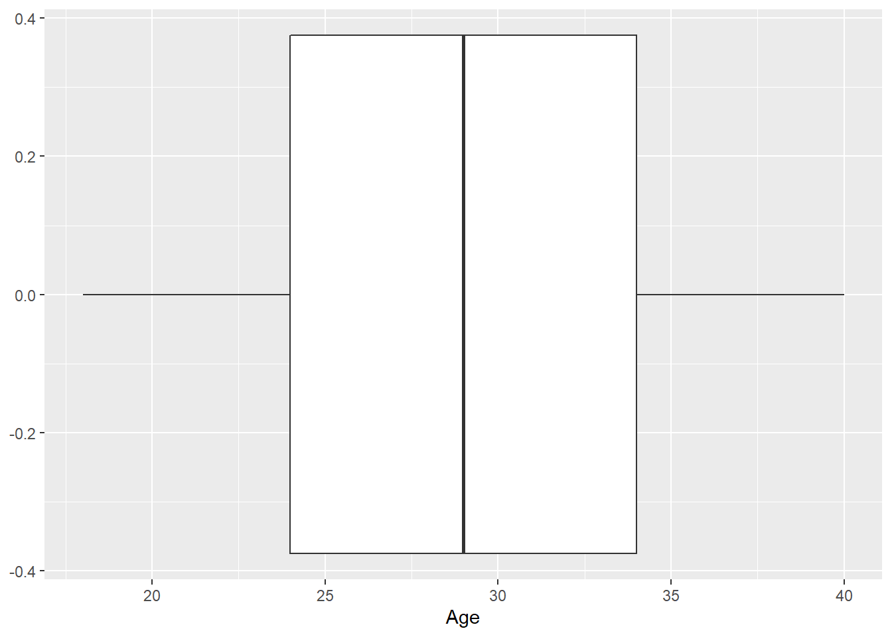
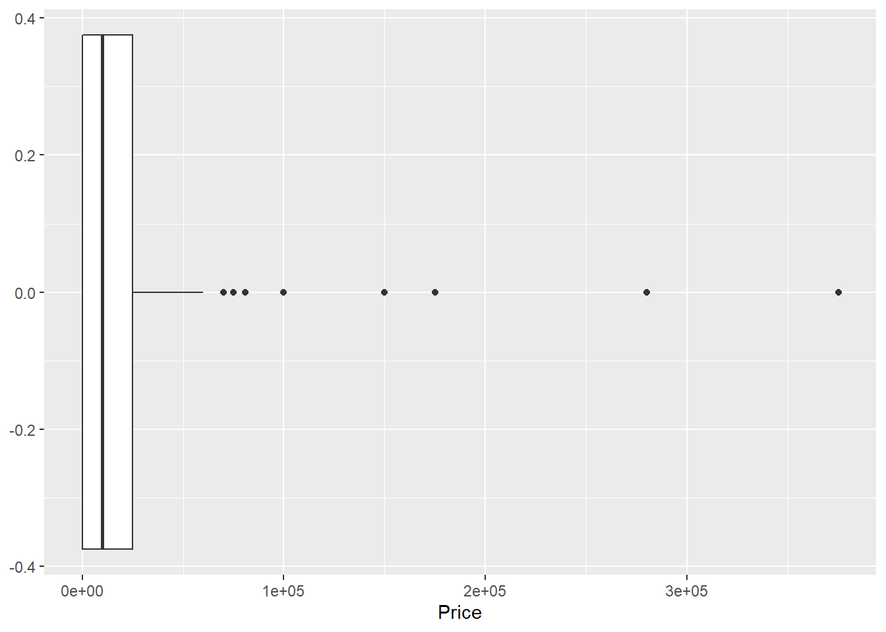
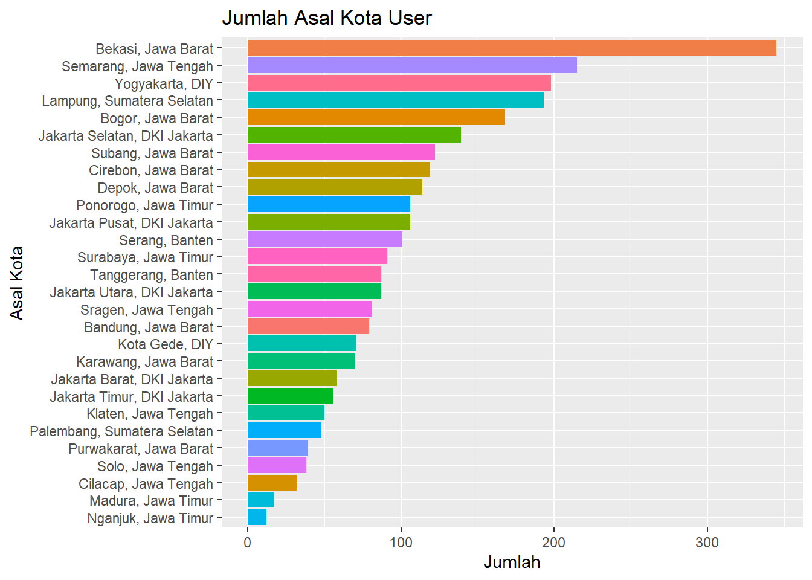

Attaching package: 'dplyr'The following objects are masked from 'package:stats':
filter, lagThe following objects are masked from 'package:base':
intersect, setdiff, setequal, unionMenganalisa Destinasi Wisata di Bandung pada Oktober 2021.
Alif Dewantara
January 23, 2023
Bandung adalah ibukota Jawa Barat. Ia terletak di dataran tinggi yang telah dikenal oleh masyarakat sebagai Jawa Barat. Kondisi geografis ini menyebabkan Bandung memiliki berbagai tempat indah yang menarik wisatawan untuk dikunjungi.
Tetapi, pandemi Covid-19 yang terjadi pada awal 2020 telah membuat kunjungan wisatawan ke Bandung berkurang cukup drastis, yakni 50%.
| 2013 | 2014 | 2015 | 2016 | 2017 | 2018 | 2019 | 2020 | |
|---|---|---|---|---|---|---|---|---|
| Wisatawan Domestik | 5,388,292 | 5,627,421 | 5,877,162 | 6,712,574 | 6,770,610 | 7,357,785 | 8,175,221 | 3,214,390 |
| Wisatawan Mancanegara | 176,432 | 180,143 | 183,932 | 186,948 | 189,902 | 227,560 | 252,842 | 30,210 |
| Total | 5,564,724 | 5,807,564 | 6,061,094 | 6,899,522 | 6,960,512 | 7,585,345 | 8,428,063 | 3,244,600 |
Sejumlah objek wisata di Bandung sudah mulai beroperasi pada Oktober 2021. Maka dari itu, diperlukan strategi khusus untuk mencari tahu cara terbaik apa yang dapat dilakukan untuk menggerakan pariwisata kembali.
Sebelum memulai analisis, mari kita mengimpor modul dan data yang diperlukan
Attaching package: 'dplyr'The following objects are masked from 'package:stats':
filter, lagThe following objects are masked from 'package:base':
intersect, setdiff, setequal, union# Membaca data place dan mem-filter id wisata Bandung
place_bandung <- place %>%
filter(City == "Bandung")
# Menggabungkan data place dan id Bandung
place_rating <- rating %>% right_join(place_bandung['Place_Id'], by="Place_Id")
glimpse(place_rating)Rows: 2,842
Columns: 3
$ User_Id <int> 1, 1, 1, 1, 1, 1, 1, 1, 1, 1, 2, 2, 2, 2, 3, 3, 3, 3, 3,…
$ Place_Id <int> 312, 258, 292, 222, 246, 265, 328, 307, 302, 328, 322, 2…
$ Place_Ratings <int> 2, 5, 3, 3, 4, 5, 2, 4, 2, 2, 4, 2, 3, 3, 5, 5, 3, 3, 2,…# Mengubah data user agar hanya berisi user yang pernah mengunjungi Bandung
user_bandung <- user %>% right_join(place_rating['User_Id'], by="User_Id")
user_bandung_dr <- user_bandung[!duplicated(user_bandung$User_Id), ] %>%
arrange(desc(User_Id))
glimpse(user_bandung_dr)Rows: 300
Columns: 3
$ User_Id <int> 300, 299, 298, 297, 296, 295, 294, 293, 292, 291, 290, 289, 2…
$ Location <chr> "Ponorogo, Jawa Timur", "Sragen, Jawa Tengah", "Bogor, Jawa B…
$ Age <int> 26, 27, 38, 39, 31, 31, 28, 34, 29, 25, 34, 35, 30, 27, 35, 2…# Membuat dataframe berisi lokasi dengan jumlah rating terbanyak
top_10 <- place_rating %>%
count(Place_Id, sort=TRUE) %>%
right_join(place_bandung[, c('Place_Id', 'Place_Name')], by="Place_Id") %>%
head(10)
# Membuat visualisasi wisata dengan jumlah 10 rating terbanyak
ggplot(top_10, aes(x=reorder(Place_Name, n), y=n)) +
geom_col(aes(fill=Place_Name), show.legend = FALSE) +
labs(x="Lokasi wisata",
y="Jumlah rating",
title="Jumlah Tempat Wisata dengan Rating Terbanyak") +
coord_flip()
# Menghitung jumlah kategori tempat wisata di Bandung
count_category <- place_bandung %>%
count(Category, sort = TRUE)
# Membuat visualisasi jumlah kategori wisata di Kota Bandung
ggplot(count_category, aes(x=reorder(Category, n), y=n)) +
geom_col(aes(fill=Category), show.legend = FALSE) +
labs(x="Jenis Wisata",
y="Jumlah",
title="Jumlah Jenis Wisata di Kota Bandung") +
scale_fill_viridis_d("viridis") +
coord_flip()
# Membuat visualisasi distribusi usia user
ggplot(user_bandung_dr, aes(x=Age)) +
geom_boxplot()
# Membuat visualisasi distribusi harga masuk tempat wisata
ggplot(place_bandung, aes(x=Price)) +
geom_boxplot()
